Bukan win rate. Gabungan sumber web (dibuka 25 Nov 2026, dicek lagi 28 Nov) dan daftar Rekomendasi Lineup in-game (rekaman 20 Nov), lalu dikoreksi dengan Penyesuaian Keseimbangan 20/11 dan 26/11 yang belum diperhitungkan sumber-sumber itu.
↑ buff, ↓ nerf, · catatan; label di belakang efek = asal perubahan (20/11, 26/11, atau server tanpa patch note). Hero bergaris hijau = carry; warna bingkai hero = harga (abu 1, hijau 2, biru 3, ungu 4, emas 5, merah muda 7 Gold).
Ringkasan
Comp S
- 6 SPECTRE + Mage + Stargazer
 Valentina
Valentina - 6 SPECTRE + StarbelleValentina
- 6 Titan + 4 Mage
Pharsa - 6 FAIRY TAIL + 4 Swiftblade / Mage / Weapons Master
 Gray
Gray Lucy
Lucy Erza
Erza - Dawnbringer: 6 Stargazer + 6 Dawnbringer / ultra 10 Dawnbringer
 EudoraValentina
EudoraValentina
Commander S
AliceFannyFreyaHarleyLukasNana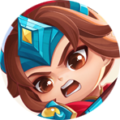
ZilongPatch: Lukas ↓ (S); Brody ↑ (A); Kagura ↑ (A); Kalea ↓ (A); Ling ↑ (A); Vexana ↓ (A); Guinevere ↓ (C)
Berubah karena patch 26/11
- Titan + Swiftblade (Balmond): A → B
- Popol & Kupa Frostrider + Phasewarper (4-4-3-3): B → C
- 6 Defender low-roll (Melissa): B → A
 Kagura B → A
Kagura B → A- Kalea S → A
 Ling B → A
Ling B → A
Untukmu
- Commander terbaikmu di S7, Fanny (30 pertandingan, juara 11, rata-rata peringkat 3,6), dinilai S oleh kedua sumber S8 dan tidak tersentuh patch 20/11 maupun 26/11.
- Resep terbaikmu di S7, Fanny + Starbelle 6 + Echomancer (juara 8 dari 17 papan), paling dekat dengan comp B Echomancer + Starbelle. Bila ingin tetap memakai hero Starbelle, comp S 6 SPECTRE + Starbelle lebih kuat (Lolita ★3 naik 26/11); Fanny sebagai commander bisa dipasang di comp mana pun.
- Lineup tersimpanmu Defender 4 + Frostrider 4 + Phasewarper 3 (+ Shadeweaver) memakai Popol dan Barbiel, yang dinerf 20/11 bersama pewarisan 4 Frostrider; Popol dinerf lagi 26/11, jadi comp ini kini C. Lineup tersimpan lain, 6 SPECTRE & 4 Mage (Kelvin), termasuk comp S.
- Lineup favoritmu di S7, Aamon + Dauntless 6 + Stargazer 4 + Mistbender 3 (Nana ★3), sejalan dengan comp A Stargazer + Mistbender / Dauntless; jangkauan skill Nana diperbaiki 20/11, Eudora ★3 naik 26/11.
Comp
Tier comp = penilaian dari sumbernya (kolom Sumber). Koreksi patch: carry atau inti yang dinerf turun satu tingkat dari tier sumber ("X di sumber"); buff hanya memulihkan sampai tier sumber, tidak melampauinya.
| Tier | Comp | Hero | Commander | Sumber | Patch dan catatan |
|---|---|---|---|---|---|
| S | 6 SPECTRE + Mage + Stargazer 6 SPECTRE 6 SPECTRE Mage Mage Stargazer Stargazer | Valentina Alpha Alpha Atlas Atlas Mathilda Mathilda HildaYi Sun-shinLucyPharsa HildaYi Sun-shinLucyPharsa Nana Nana | Brody |
|
|
| S | 6 SPECTRE + Starbelle6 SPECTRE4 Starbelle | ValentinaAlphaAtlasHildaMathildaYi Sun-shin EdithLolita EdithLolita CiciMiya CiciMiya | Alice |
|
|
| S | 6 Titan + 4 Mage 6 Titan4 Mage 6 Titan4 Mage | Pharsa ArgusValentina ArgusValentina Balmond Balmond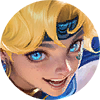 Sora Bruno Bruno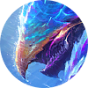 Helcurt Grock Grock | BrodyZilong |
|
|
| S | 6 FAIRY TAIL + 4 Swiftblade / Mage / Weapons Master 6 FAIRY TAIL4 Swiftblade4 Mage 6 FAIRY TAIL4 Swiftblade4 Mage 4 Weapons Master 4 Weapons Master |  NatsuGrayLucyErza NatsuGrayLucyErza Juvia Juvia WendyFanny WendyFanny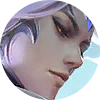 Ling KimmyKarinaValentinaPharsaArgus KimmyKarinaValentinaPharsaArgus Leomord Leomord | Karina Guinevere Guinevere |
|
|
| S | Dawnbringer: 6 Stargazer + 6 Dawnbringer / ultra 10 Dawnbringer 6 Dawnbringer6 Stargazer 6 Dawnbringer6 Stargazer | Eudora TerizlaNana TerizlaNana Yu Zhong Yu Zhong ValirMathildaKarina ValirMathildaKarina SelenaLingValentinaAngelaLapu-Lapu SelenaLingValentinaAngelaLapu-Lapu | 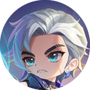 AamonZilongBrodyHarley |
|
|
| A S di sumber | 6 Frostrider + 4 Weapons Master 6 Frostrider4 Weapons Master 6 Frostrider4 Weapons Master | Leomord Kupa Kupa Barbiel Barbiel Popol Popol Irithel Irithel ThamuzArgusHarley ThamuzArgusHarley Bane Bane | Lukas |
|
|
| A | Dragonslayer + SPECTRE 6 Dragonslayer6 SPECTRE 6 Dragonslayer6 SPECTRE | ValentinaKimmyLingAtlasAlphaMathildaYi Sun-shinNatsu Moskov Moskov | Lukas 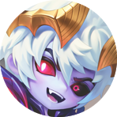 Dyrroth |
|
|
| B S di sumber A sebelum 26/11 | Titan + Swiftblade (Balmond)TitanSwiftblade | BalmondLingFannyArgusGrayValentinaThamuz | Aamon |
|
|
| A | Stargazer + Mistbender / Dauntless (Nana)6 Stargazer 3 Mistbender 3 Mistbender Dauntless Dauntless | Nana Uranus Uranus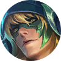 AldousEudoraValirJuviaLapu-LapuBalmondPopol | Lunox 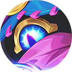 Cyclops |
|
|
| A S di sumber | Ultra 10 Starbelle 10 Starbelle | ValentinaAlphaBalmondKarinaMiya | Vexana |
|
|
| C S di sumber B sebelum 26/11 | Popol & Kupa Frostrider + Phasewarper (4-4-3-3)4 Frostrider 4 Defender 4 Defender 3 Phasewarper 3 Phasewarper | PopolKupaLeomordBarbielKaditaHarleyThamuz Melissa Melissa | Vexana |
|
|
| B S di sumber | Reroll Irithel (Zilong low-roll) Bruiser FrostriderDeadeye | IrithelKupaAldous MashaYu ZhongMiyaNatsu MashaYu ZhongMiyaNatsu | Zilong |
|
|
| B A di sumber | 6 Bruiser (Popol & Kupa / Melissa) 6 Bruiser Phasewarper | PopolKupaYu ZhongMashaAldous JawheadNatsuMelissa JawheadNatsuMelissa GatotkacaLeomord GatotkacaLeomord | LyliaYu Zhong |
|
|
| B | Echomancer + Weapons Master / ultra 10 Echomancer (Thamuz) 6 Echomancer6 Weapons Master 6 Echomancer6 Weapons Master | ThamuzArgusLeomordErza JohnsonSelenaSoraLapu-Lapu JohnsonSelenaSoraLapu-Lapu | CyclopsVexana |
|
|
| B | Echomancer + Starbelle (Thamuz)EchomancerStarbelle | ThamuzLolitaFannyCici ValeSora ValeSora | Lukas |
|
|
| B | 6 Dragonslayer + Swiftblade (Ling)6 DragonslayerSwiftblade | LingPopolGrayFannyKarinaHarleyEudoraKupa | Aurora |
|
|
| A B sebelum 26/11 | 6 Defender low-roll (Melissa)6 Defender | Melissa HylosEdithBarbiel HylosEdithBarbiel | Angela |
|
|
| C | 3 Phasewarper (Thamuz, Kadita)3 Phasewarper | ThamuzKaditaHarleyPopolJohnson | Cyclops |
|
|
Commander
Gabungan = rata-rata dua sumber (S 4, A 3, B 2, C 1; satu sumber bila hanya satu yang menilai), ±0,5 untuk tiap buff/nerf commander di patch 20/11 dan 26/11 (catatan server tanpa panah tidak dihitung). S butuh rata-rata ≥ 3,5, paling tidak satu sumber S, dan tidak ada sumber di bawah A; A ≥ 2,75; B ≥ 1,75; sisanya C.
| Gabungan | Commander | mcggdb | loadoutgg | Patch |
|---|---|---|---|---|
| S | Alice | S | A | |
| S | Fanny | S | S | |
| S | Freya | A | S | |
| S | Harley | S | A | |
| S | Lukas | S | S | ↓ Lukas: Sacred Gift 3–4× → 2–3× Gold (20/11) |
| S | Nana | A | S | |
| S | Zilong | A | S | |
| A | Brody | A | A | ↑ Brody: Abyssal Surge bisa dipakai mulai Babak I-1 (20/11) |
| A | Chou | A | A | |
| A | Dyrroth | A | A | |
| A B sebelum 26/11 | Kagura | B | A | ↑ Kagura: Shield Bintang 2 125% → 135% Max HP (26/11) |
| A S sebelum 26/11 | Kalea | A | S | ↓ Kalea: hadiah Brankas Harta 5–8 poin berkurang 1–2 Gold (26/11) |
| A | Lancelot | A | A | |
| A B sebelum 26/11 | Ling | A | B | ↑ Ling: Hybrid ATK permanen per duel 6% → 8% (26/11) |
| A | Lunox | A | A | |
| A | 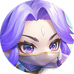 Luo Yi | A | A | |
| A | 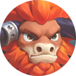 Minotaur | A | A | |
| A | Odette | – | A | · Odette: tooltip 8–9 sinergi di layar 25%/35% dan 45%/60% HP/Hybrid ATK (file 30%/40% dan 50%/65%), nilai server tanpa patch note yang tidak diketahui sejak kapan; tidak dihitung (server) |
| A | 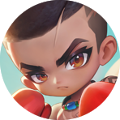 Paquito | A | A | |
| A | 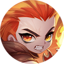 Valir | A | A | |
| A | Vexana | A | S | ↓ Vexana: hadiah Go Go Box tambahan hanya di 3 Fase pertama; Gold per Fase 4 → 2 (20/11) |
| A | Yu Zhong | B | S | |
| B | Aamon | A | B | |
| B | Alucard | B | A | |
| B | Angela | B | A | |
| B | Aurora | B | B | |
| B | Diggie | B | B | |
| B | 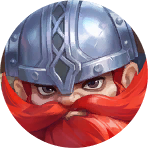 Franco | A | B | |
| B |  Johnson Johnson | B | A | |
| B | Karina | B | A | |
| B | Layla | B | A | |
| B | Lylia | B | B | |
| B | 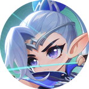 Miya | A | C | |
| B | Moskov | A | B | |
| B | Popol & Kupa | A | B | |
| B | Ruby | B | A | |
| B | Vale | A | B | |
| B | Wanwan | C | A | |
| C | Cyclops | B | C | |
| C | Guinevere | C | B | ↓ Guinevere: Hero gratis Bintang 2 24% → 23% (26/11) |
| C | Gusion | C | B |
Cara membaca season ini
- Wheel of Fate (9 efek aktif) mengubah babak Go Go Card tiap pertandingan. Crystal Legend (putaran 1 hanya Kartu Badge Sinergi) dan Synergy Awakening (putaran 2 hanya kartu peningkatan Sinergi) membantu comp ultra 10; Hero Reinforcement (hero 3, 4, lalu 5 Gold acak setelah tiap pemilihan) membantu comp yang butuh carry 5 Gold.
- Sejak S8 Kartu Power adalah Go Go Card emas dan tidak dijamin muncul, karena itu loadoutgg menaikkan commander yang tetap menghasilkan tanpa Kartu Power: Kalea, Lukas, Nana. Pengecualian: efek Commander's Power membuat putaran 1 hanya berisi Kartu Power, dan slot pertamanya selalu Kartu Power commander sendiri (terbukti di rekaman 22 Nov).
- Tycoon (semua kartu finansial emas) dan Gold Galore (semua kartu emas) mempercepat ekonomi; Early Reinforcement memajukan Go Go Card ke Babak I-2, I-3, I-4. Fate Sync memberi semua pemain kartu yang sama: hindari berebut Magic Crystal yang sama (saran kitakuji).
- Patch 20/11 menaikkan Valentina ★2, Gray ★3, Kimmy ★3, Yu Zhong, 10 Dawnbringer, serangan 6 Frostrider, dan Brody, serta memperbaiki Nana dan Lightstick; yang turun Balmond, Popol, Barbiel, 2/4 Frostrider, HP warisan Frostrider, Lukas, dan Vexana.
- Patch 26/11 menaikkan ★3 hero 4 Gold (Melissa, Eudora, Kimmy, Argus, Lolita, Yu Zhong, Sora), Karina, Erza, 4/6 Dawnbringer, Swiftblade, Kagura, dan Ling; yang turun Balmond (★3 dan atribut Titan), Popol, Bane, Kalea, dan Guinevere. Panel Bane di pertandingan 27 Nov pagi masih memakai nilai lama, jadi waktu berlakunya belum pasti.
- Data pertandinganmu di S8 (23 laporan MATCH 16–27 Nov, hampir semuanya sebelum patch 26/11 berlaku): dari 20 pertandingan dengan layar hasil kamu juara 13 kali, peringkat 2 lima kali, lalu peringkat 4 dan 7 sekali. Papan Dawnbringer 5–6 juara 4 dari 4; papan SPECTRE 5–7 juara 4 kali dan peringkat 2 tiga kali. Di 132 papan berperingkat pemain lain, Titan >= 4 hero ada di 28% papan peringkat 1–4 vs 12% papan 5–8 (Balmond belum kena nerf 26/11), sedangkan SPECTRE hanya 6% vs 17%. Sampel kecil, bukan win rate.
Sumber
- loadoutgg: Best Comps & Lineups (November 2026) — https://loadoutgg.com/magic-chess-gogo/teams/
25 comp bertanda RANKED S8 atau LOW-ROLL, S sampai C. Dibuka 25 Nov 2026 dan dicek lagi 28 Nov: belum berubah,belum memuat Penyesuaian 20/11 dan 26/11. - loadoutgg: Commander Tier List (November 2026) — https://loadoutgg.com/magic-chess-gogo/commanders/
41 commander S8. Halamannya menulis "tiers updated 27 Sep 2026" padahal isinya sudah S8 (Odette baru, perubahan 15 Nov). Vexana diletakkan pertama karena hadiah Go Go Box tambahan di setiap tahap, yang dibatasi patch 20/11. Dicek lagi 28 Nov: belum berubah. - mcggdb: Commander tier list S8 — https://mcggdb.com/commanders/
"Our take" untuk ranked Legend ke atas, dari angka commander dan pilihan pro; bukan win rate. Odette tidak dinilai. Dicek lagi 28 Nov: belum berubah. - kitakuji: Sinergi Magic Chess Terkuat (Update Season 8) — https://kitakuji.id/blog/sinergi-magic-chess-terkuat-dan-update-terbaru/
18 Nov 2026, lima combo meta awal ranked Mythic, sebelum patch 20/11. Ada klaim yang tidak cocok dengan data game: "tidak ada commander baru", padahal Odette baru di S8 (40 → 41 commander). - In-game: Rekomendasi Lineup
Rekaman ponsel 20 Nov 09:33, sebelum patch 20/11. Semua lineup bernilai S; angka = popularitas (ikon api), bukan win rate. Hero dikenali dari ikon (mc_vision.py); tanda C/T di layar = carry/tank.